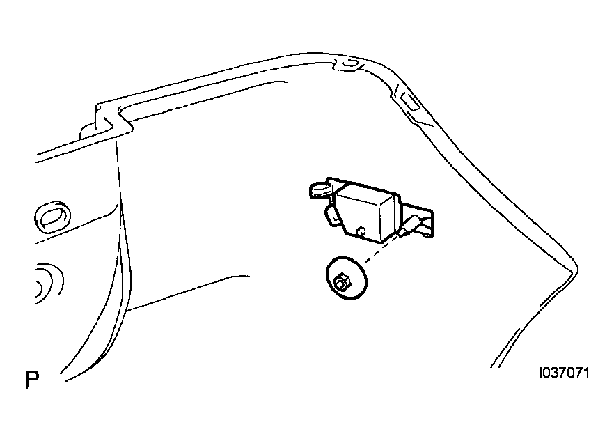

Rear Side Marker Light Assembly: Removal
HINT:
- Use the same procedures for the RH side and LH side.
- The procedures listed below are for the LH side.
- DISCONNECT CABLE FROM NEGATIVE BATTERY TERMINAL
- REMOVE REAR BUMPER SIDE SEAL LH (See
REMOVAL
)
- REMOVE REAR BUMPER SIDE SEAL RH (See
REMOVAL
)
- REMOVE REAR BUMPER COVER (See
REMOVAL
)
- REMOVE REAR SIDE MARKER LIGHT ASSEMBLY LH
- Disconnect the connector.
- Remove the nut and rear side marker light.

Courtesy of © TOYOTA, LICENSE AGREEMENT TMS1002